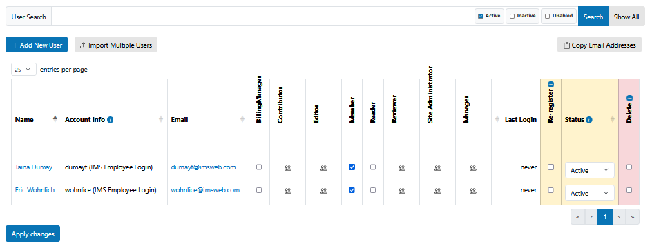

Browser Changes
This package overrides core Plone functionality for the User’s Overview page. It includes the following features:

Browser View @@usergroup-userprefs
Search by activity status
Include current status and option to activate/disable accounts in the table results
Visual indication of non-active user rows
IdP account info
Replace Update Password with Re-Register checkbox.